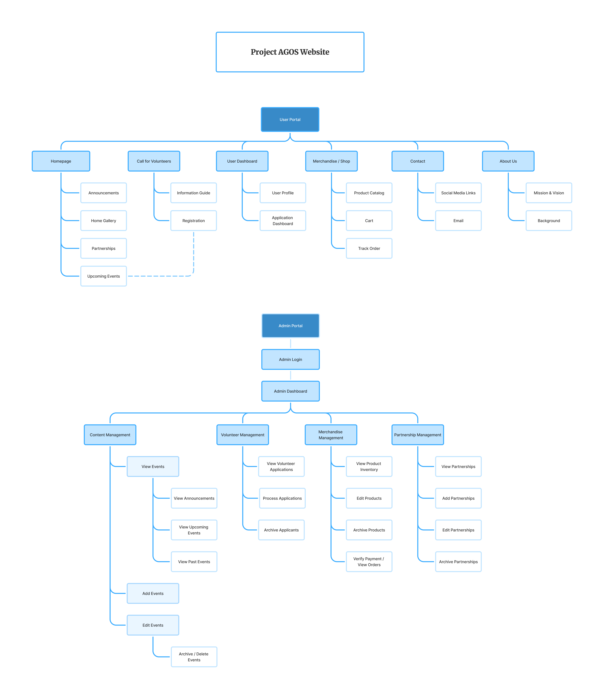
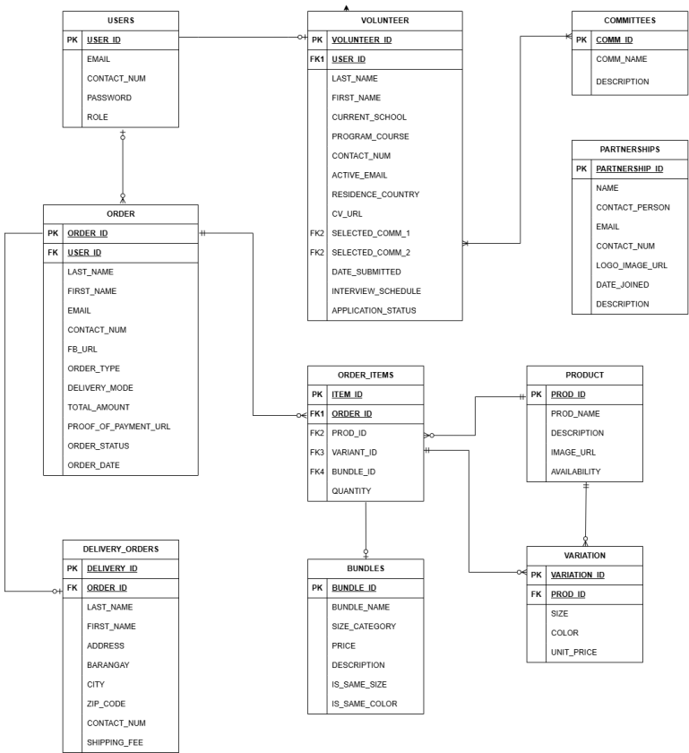

Project AGOS - UI/UX, Admin
Dashboard Portal and Website
Project AGOS
A centralized official digital platform for a youth-led environmental initiative, focused on river rehabilitation, volunteer management, and advocacy-driven e-commerce.

01 The Context: Digitizing a Manual System
[Problem Statement]
Project AGOS previously relied on fragmented social media platforms like Facebook and physical primers for communication. This lack of a centralized platform made it difficult to clearly present the organization's mission, hindered volunteer recruitment, and created barriers to building trust with institutional partners like the DENR.
Solution:
A professional, dual-portal web application designed to act as the official digital hub for Project AGOS. The system centralizes mission-critical information, automates volunteer management, and introduces an advocacy-driven e-commerce platform to fund river rehabilitation.
As the Lead UI/UX Designer, I was responsible for the end-to-end visual strategy and Figma prototyping. As a Frontend Developer, I collaborated on implementing these designs into a functional web application hosted on Render.
02 Systems Architecture & UX Strategy
I designed the system to scale from a student project into a professional advocacy platform.
- Dual-Portal Architecture: To ensure security and ease of use, I structured the system into a flat, intuitive User Portal for community engagement and a robust Admin Portal for internal management.
- Behavioral UX: I implemented a "1 shirt = 1 Mabuhay Ball" conversion concept in the e-commerce flow to provide users with immediate "impact transparency"—linking their purchase directly to environmental rehabilitation.
- Volunteer Conversion: I designed a strategic flow that connects "Upcoming Events" directly to a dynamic registration form, reducing friction for potential volunteers.
[System Logic & Data Modeling]
The system was built on a Supabase cloud database to ensure secure, real-time data integrity. I designed the ERD to handle complex relationships between volunteer committees, merchandise variations, and order tracking.
The Sitemap

The Database Design (ERD)

Use Case Diagram

03 UI Design & Visual System
I established a modern, trustworthy digital identity inspired by Uniqlo's minimalist aesthetic to ensure scannability and professional credibility.
- Design Motif: The "AGOS" (The Current) theme is reflected through fluid wave icons and organic illustrations of the "Bokashi" balls.
- The Palette: Used Deep Teals (#78B1B2) for water restoration and Earthy Browns (#88582F) to represent the bioremediation elements.
- Navigation Logic: Designed a flat navigation structure for the User Portal to ensure maximum accessibility for the general public.
[Design System]

Project AGOS Website (User Side)
This walkthrough highlights the centralized public platform for Project AGOS, showcasing a clean, minimalist interface inspired by Uniqlo's aesthetic to establish professional credibility. The site features an immersive media gallery of river rehabilitation efforts and a streamlined e-commerce module that utilizes a "1 shirt = 1 Mabuhay Ball" conversion concept to link community support directly to environmental impact.
Project AGOS Admin Dashboard (Management Side)
The admin dashboard demonstrates a robust backend ecosystem designed for operational efficiency. This walkthrough showcases the live CRUD (Create, Read, Update, Delete) modules that allow the management team to process volunteer applications, update merchandise inventory, and monitor real-time engagement analytics. By centralizing fragmented manual data, the dashboard serves as a high-trust "Single Source of Truth" for the organization's leadership.
04 Engineering & QA
In my role as the second Frontend Developer, I ensured the high-fidelity designs were implemented with technical precision.
- Frontend Stack: Translated Figma prototypes into clean, responsive layouts using HTML/CSS/JS (PHP), with a focus on cross-device performance.
- Quality Assurance: To meet the standards required for corporate grant applications, I conducted a rigorous testing phase.
- Testing Success: Verified 22+ distinct test cases—including secure admin authentication, data validation, and order tracking—achieving a 100% pass rate.

Traceability Matrix
05 Impact & Reflection
The successful delivery of the Project AGOS web application was officially signed off by the organization's Head of Media & Marketing in March 2026.
[SDG ALIGNMENT]
SDG 6 (Clean Water)
Facilitating the creation of 840+ Mabuhay Balls for the Estero de Paco rehabilitation.
SDG 11 (Sustainable Cities)
Promoting urban resilience through a centralized repository of climate educational content.
SDG 17 (Partnerships)
Providing the professional infrastructure needed to build formal ties with institutions like the DENR.
Thank You For Stopping By!
Feel free to leave any thoughts :)
Email: mendozaclaireantonette791@gmail.com
LinkedIn: Claire Antonette Mendoza
Keep Exploring!

Tyche Nails
Data-Driven Salon Management
An end-to-end platform integrating intuitive UI with a predictive analytics dashboard to help salon owners track KPIs.

Loop
HCI Final Project: Mapua Exchange App
An interactive campus exchange application utilizing core Human-Computer Interaction principles.

Cocopan Insights
SME Business Intelligence
A comprehensive business intelligence dashboard transforming raw datasets into actionable visualizations.